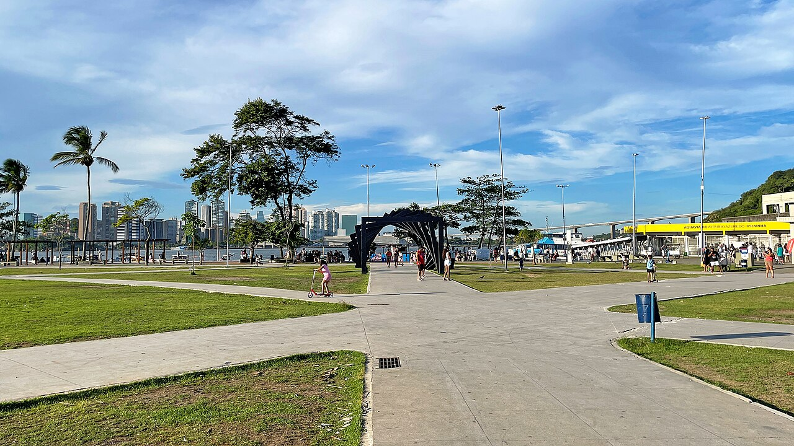
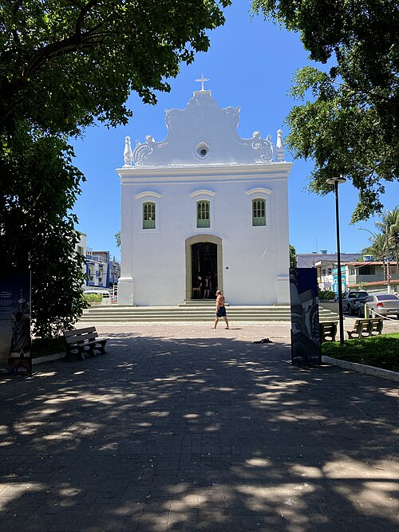
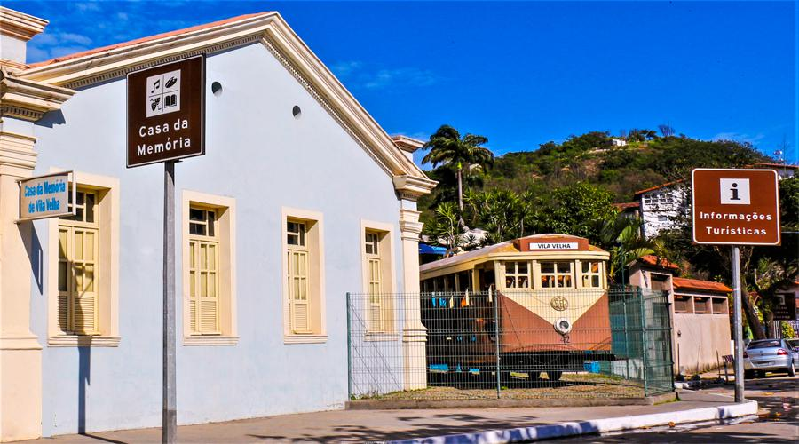
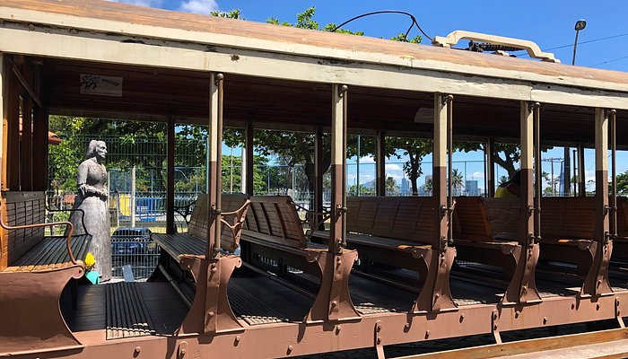
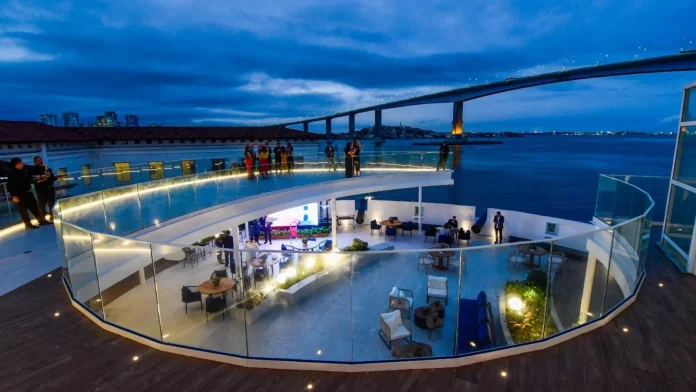
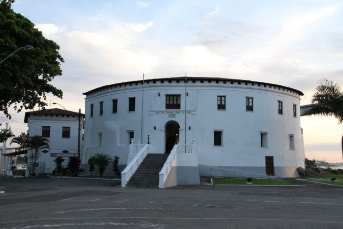
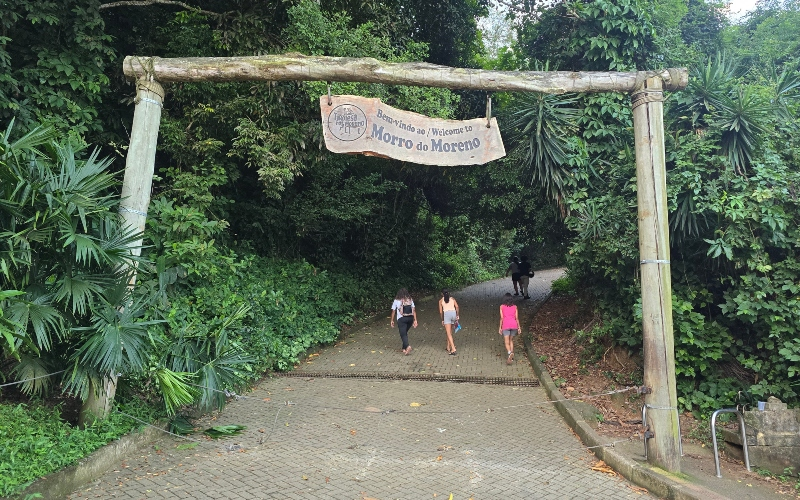

Guia Cultural de Vila Velha
📍 Conjunto Histórico




O berço da colonização do Espírito Santo, reunindo a Igreja do Rosário, a Casa da Memória e o Parque da Prainha.
Funcionamento: Parque da Prainha (Livre 24h) | Casa da Memória (Terça a Domingo, 09h às 17h).
📍 Complexo Marinha e Batalhão



Área militar e opções de lazer com vista para a baía.
Funcionamento: Área externa e restaurante (Diariamente, das 10h às 22h).
📍 Morro do Moreno


Um dos pontos mais icônicos de Vila Velha, oferecendo uma vista panorâmica incrível da Terceira Ponte, do Convento da Penha e de toda a orla.
Horário de visita: Aberto 24h (Recomendado subir durante o dia ou para o nascer/pôr do sol).
Dica: Pode ser acessado a pé pela trilha principal ou de carro.